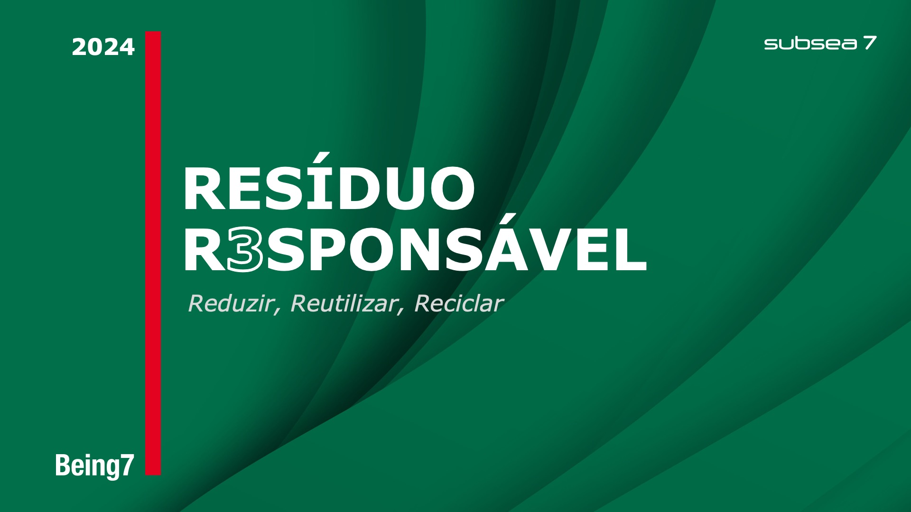
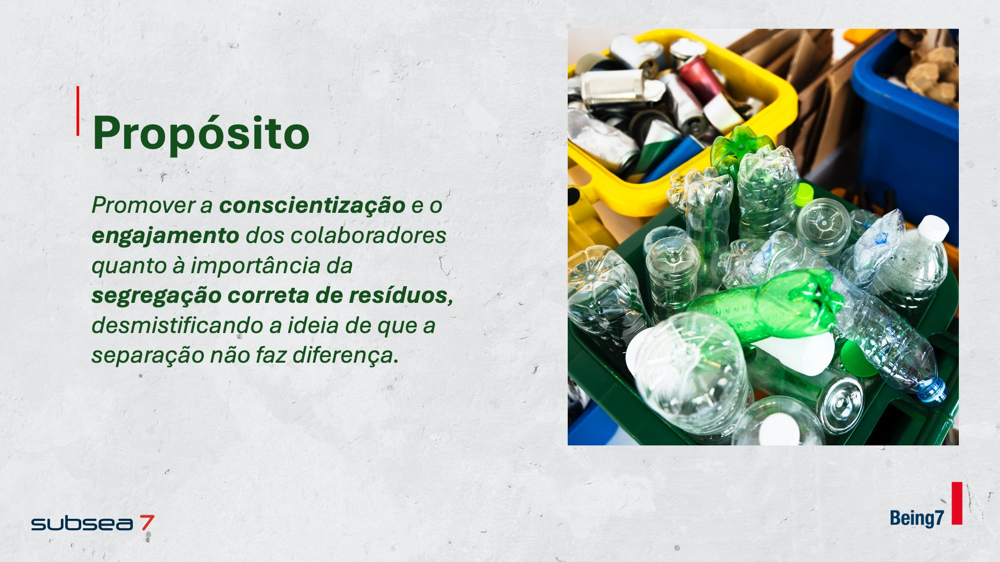
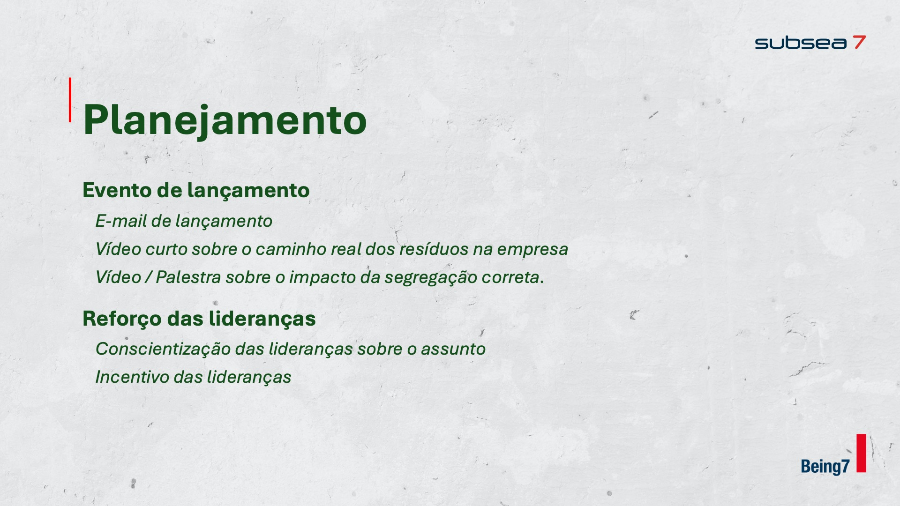
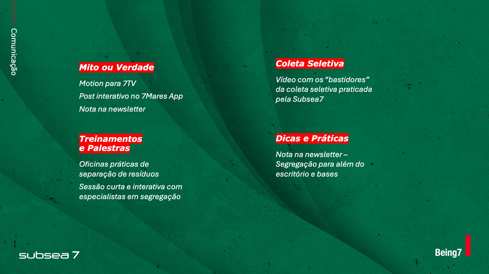
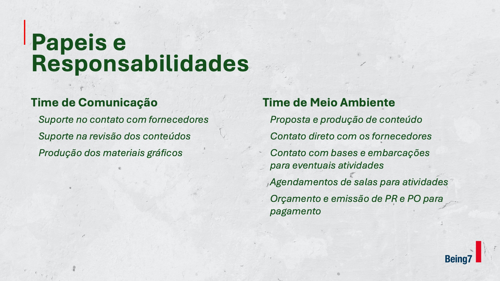

Educar
Informar sobre os tipos de resíduos e como eles devem ser separados.
07 — Subsea7

Contexto
Resíduo Responsável foi uma iniciativa de Comunicação Interna da Subsea7 voltada à conscientização sobre a segregação correta de resíduos.
O desafio de comunicação era combater a percepção de que a separação não faria diferença e transformar o tema em uma pauta simples, recorrente e próxima da rotina dos colaboradores.

Estratégia
A campanha foi estruturada em quatro frentes que transformam um tema operacional em uma jornada de comunicação: primeiro explicar, depois remover objeções, criar participação e manter o assunto vivo ao longo do tempo.
Essa lógica permitiu pensar a campanha além de uma ação pontual, conectando conteúdo, comportamento e continuidade.
Informar sobre os tipos de resíduos e como eles devem ser separados.
Combater a ideia de que, depois da coleta, todos os resíduos seriam misturados novamente.
Criar senso de responsabilidade e pertencimento em torno das boas práticas.
Acompanhar a evolução da iniciativa e reforçar comportamentos positivos.
Planejamento
O planejamento combinava um lançamento dedicado com comunicação de reforço ao longo da campanha. E-mail, vídeo, palestras e participação das lideranças ajudavam a construir recorrência para o tema.
O objetivo era fazer com que a mensagem não terminasse no lançamento, mas continuasse aparecendo de formas diferentes na rotina interna.

Comunicação
A estratégia previa conteúdos como Mito ou Verdade, bastidores da coleta seletiva, treinamentos, palestras e dicas práticas — distribuídos entre canais internos como 7TV, aplicativo e newsletter.
Cada formato cumpria uma função diferente, mas todos reforçavam a mesma mensagem central: a segregação correta depende da participação de cada pessoa.

Trabalho integrado
O projeto foi desenvolvido de forma multidisciplinar. O time de Meio Ambiente concentrava conhecimento técnico e articulação operacional, enquanto Comunicação apoiava revisão, contato com fornecedores e produção dos materiais gráficos.
Essa divisão permitia unir conteúdo especializado e execução de comunicação em uma campanha coerente para o público interno.

Minha atuação
Dentro do time de Comunicação, minha atuação esteve ligada à construção e execução da iniciativa, com participação no planejamento da comunicação e na produção dos materiais gráficos da campanha.
O projeto evidencia uma frente do meu trabalho que vai além da criação de peças: organizar uma mensagem, pensar sua recorrência e traduzi-la em diferentes pontos de contato internos.
Contato
Projeto, oportunidade profissional ou uma boa troca sobre design — escolha o canal que fizer mais sentido.
© 2026 · Bernardo Ramalho